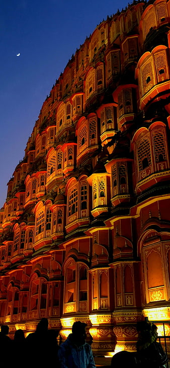

PLACES WHICH SHOULD NOT MISS WHILE YOU ARE IN INDIA
About me
Taj Mahal,Agra

This iconic white marble mausoleum is a UNESCO World Heritage Site and a symbol of love. Its intricate architecture and beautiful gardens make it a must-visit destination.
Jaipur,Rajasthan
Known as the "Pink City," Jaipur offers a blend of historical sites, colorful bazaars, and stunning palaces, including the Hawa Mahal and Amber Fort.
Varanasi,Uttar pradesh

Considered one of the oldest cities in the world, Varanasi is a spiritual and cultural hub on the banks of the Ganges River. It's known for its ghats, temples, and vibrant rituals.
Kerala Backwater

The serene backwaters of Kerala offer a unique experience of cruising through tranquil canals, lush landscapes, and charming villages on traditional houseboats.
Goa

Famous for its beautiful beaches, vibrant nightlife, and Portuguese-influenced architecture, Goa is a popular destination for relaxation and entertainment.
Himalayas
The northern regions of India offer stunning views of the Himalayan mountain range. Places like Shimla, Manali, and Leh are popular for their scenic beauty and adventure activities.
Udaipur,Rajasthan
Known as the "City of Lakes," Udaipur is renowned for its stunning lakes, palaces, and intricate architecture, including the magnificent Lake Palace.
Mumbai,Maharashtra
The bustling city of Mumbai is the financial and entertainment capital of India. Visit iconic landmarks like the Gateway of India and explore its diverse neighborhoods.
Delhi

The capital city is a blend of historical monuments, bustling markets, and modern developments. Key attractions include the Red Fort, India Gate, and Qutub Minar.
Rishikesh and Haridwar,Uttarakhand

These two cities along the Ganges River are known for their spiritual significance and adventure activities like white-water rafting and yoga retreats.
Ajanta and Ellora Caves,Maharashtra
These ancient rock-cut caves are adorned with intricate sculptures and murals, showcasing India's rich cultural history.
Mysore,Karnataka
Mysore is famous for its grand Mysore Palace, vibrant Dasara festival, and rich cultural heritage.
Khajuraho, Madhya Pradesh
Known for its group of intricately carved temples, Khajuraho is a UNESCO World Heritage Site and a testament to India's architectural and artistic excellence.
Andaman And Nicobar Island

These islands offer stunning beaches, crystal-clear waters, and a variety of water sports and marine life exploration opportunities.
Srinagar, Jammu and Kashmir

Set against the backdrop of the Himalayas, Srinagar is known for its picturesque Dal Lake, Mughal gardens, and houseboats.